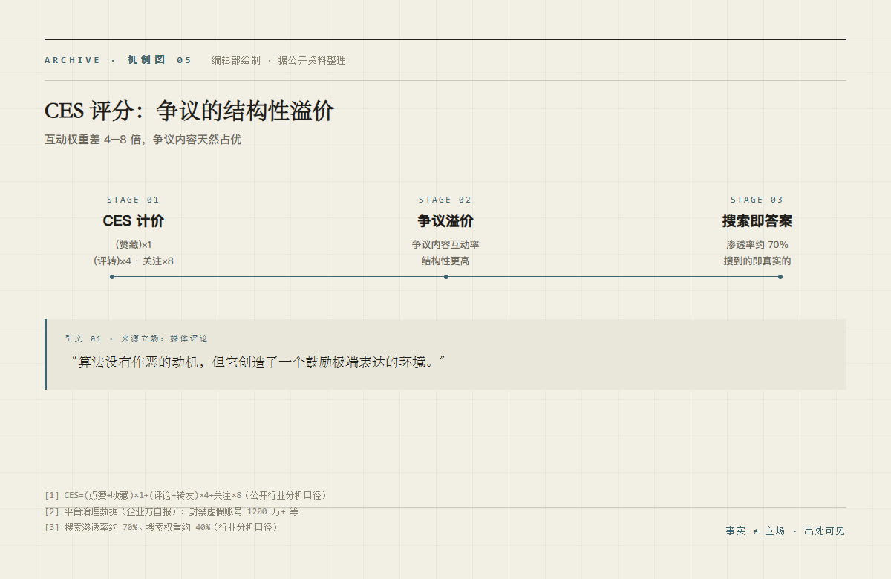

谁看起来过得对：分发的第二代
演变期观察 · 之二 · 范围：小红书 CES 评分、搜索权重与平台治理。写机制，不写恶。
这一篇看演变期的第二代场域。上一篇讲微博把「谁喊得大声谁有理」变成默认规则；这一代的规则更精细，也更难被指认：它不奖励音量，奖励姿态——谁看起来过得对、谁看起来站得正、谁看起来不需要解释，谁就拥有可见度。载体是小红书的 CES 评分与「搜索即答案」心理。先把立场写在最前面：本篇写机制，不写「恶」。把复杂机制钉在一个平台名上当替罪羊，正是本专题要拆的动作；小红书是放大器与固化器，不是起点。
小红书笔记的推荐分发采用业内通行分析所称的 CES（Community Engagement Score）评分，公开行业分析给出的口径是：CES =（点赞 + 收藏）×1 +（评论 + 转发）×4 + 关注 ×8[1]。注意权重结构：评论与转发的单价是点赞的 4 倍，关注是 8 倍。也就是说，一条让人「看一眼就划走」的客观内容，与一条让人「忍不住要吵两句」的争议内容，在这套计价里完全不是一个量级。
关键的判断在这里：争议天然比客观更容易触发高权重互动。这不是平台的主观恶意，是规则设计的客观结果——评论率、转发率在争议内容上就是结构性地更高。算法没有作恶的动机，但它创造了一个鼓励极端表达的环境，让「谁喊得大声谁有理」变成了事实上的社区法则[2]。用本专题的框架说：微博的一代机制奖励音量，小红书的二代机制奖励可争议性——而最容易制造争议的表达方式，是把自己放在无可指摘的受害者/正确者位置上。
引文 01 · 来源立场：媒体评论
"算法没有作恶的动机，但它创造了一个鼓励极端表达的环境，让谁喊得大声谁有理变成了事实上的社区法则。"
—— 新浪财经相关评论（据媒体评论）。立场：媒体方，非平台方、非当事方。
小红书与纯推荐流平台的关键差别在第二条腿：搜索。据行业分析口径，其站内月均搜索渗透率约 70%，搜索流量在整体分发中的权重约 40%[3]。这个结构改变的是心理层面的默认设定：搜到的即真实的。用户带着问题来（"彩礼谈崩怎么办""被指控怎么自证"），拿到的是按 CES 排序的答案——排在前面的，被默认为对的。一代机制只是让你看见大声的；二代机制让大声的看起来像标准答案。
用户结构可以做描述性了解，但必须小心使用。据公开行业分析，平台用户中女性约占 71.98%，18–24 岁约占 43.8%，一线与新一线城市合计约占 66.36%[3]。这组数字只描述「谁在场上」，不推论「谁在作恶」——结构决定议题偏好与话语风格，不决定道德。任何拿用户性别结构当指控依据的写法，都越过了本专题的纪律。
到这里，「谁看起来过得对」的机制就完整了：CES 给争议性姿态溢价 → 高争议姿态内容排前 → 搜索把这些排序固化为答案 → 用户把答案内化为常识。一条叙事从「被看见」到「被默认」，全程不需要任何人的主观恶意，只需要每个人按规则行动。

▲ 图 05：CES 评分：争议的结构性溢价 · 编辑部绘制。权重口径见注 [1]。
写机制批判如果不写平台的治理动作，就是选择性陈列——本专题自己的纪律不允许。据平台公开的治理数据（企业方自报口径，未经第三方审计）：累计封禁虚假账号 1200 万以上、处置虚假营销笔记 1376 万篇、清理虚假评论 3.6 亿条[4]。这些数字说明治理在发生，量级也不小。
但要区分两种「假」：治理打击的是虚假信息（假账号、假营销、刷量），而本篇拆的机制性溢价不虚假——争议内容的高互动是真实的，排序是按规则算的，搜索答案是按权重排的。治理清不掉规则本身的倾斜。2026 年 4 月，有企业方负责人公开质疑平台算法分发，这类声音可作为「机制被大规模公开质疑」的节点，但必须标注：该质疑来自企业方立场，其自身也是流量竞争的参与者；平台方的回应与治理数据同样要如实呈现[5]。质疑机制的声音本身也在机制里，这是观察时必须带上的距离。
最后回到本专题主线。二代机制对「男性叙事」处境的具体影响，不在平台针对谁，而在于：当「看起来过得对」成为可见度货币，不擅长自我包装、不习惯把立场放在受害者位置、坚持先讲程序后讲感受的表达方式，在 CES 计价里是贬值资产。持有这些表达方式的人不分性别，但在本专题观察的议题结构里，它恰好与「男性叙事」的公共处境高度重合。这是重合，不是因果定论——因果的复杂性，留给演变期后两篇（制度错位、语言贬值）继续拆。
注 · SOURCES
[1] CES =（点赞+收藏）×1 +（评论+转发）×4 + 关注×8。据公开行业分析与运营研究的通行口径，平台未逐项确认公式细节，权重比例以「公开分析口径」标注。
[2] 新浪财经相关评论，据媒体评论。原话为媒体立场，非平台方、非学界。
[3] 搜索渗透率约 70%、搜索权重约 40%、用户结构（女性 71.98% / 18–24 岁 43.8% / 一线新一线 66.36%），据公开行业分析口径，描述性数据，非指控依据。
[4] 平台治理数据（封禁虚假账号 1200 万+、处置虚假营销笔记 1376 万篇、清理虚假评论 3.6 亿条），企业方自报口径。
[5] 2026.04 企业方负责人公开质疑算法分发，据公开报道；质疑方为企业方立场，平台回应与否以公开信息为准，本文并陈。
口径说明
本文为社会学观察，不站任何性别立场，作者性别不作为论证依据。事实据公开来源，观点归属已标注；涉及未证实指控不转述、不评价。本篇写机制不写「恶」，平台治理数据与机制批评并陈。拆解机制是为了理解，不是行动指南。
出口：CES 公式既然能被分析出来，就该能被平台以官方口径说明——「你的笔记为什么分发给这些人」如果有一句可核对的解释，用户对排序的默认信任就会从「信仰」退回「参考」。算法不可解释时，所有争论都只能打在替罪羊身上。